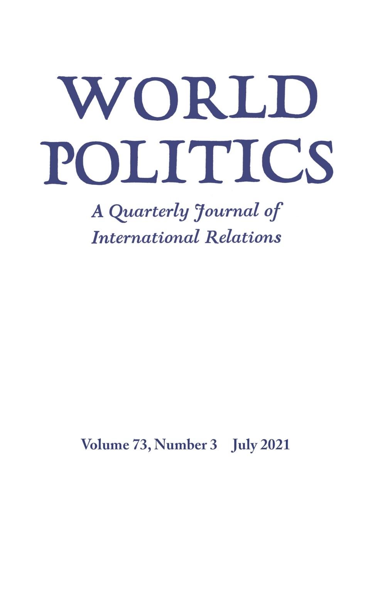

收录于合集 #新刊速递 123个

期刊简介

《世界政治》（ World Politics ）创刊于1948年，是享誉国际的政治科学季刊，内容涵盖国际关系和政治科学的各个领域，其主编是Deborah J. Yashar。该期刊欢迎的投稿类型有具有理论和实证贡献的研究类文章，以及有关国际关系和比较政治问题的评论性文章。2019年该期刊的影响因子为2.5，在95种国际关系类期刊中位列第15名，在180种政治科学类期刊中位列第36名。
本期编委
编译： 王川 王嘉许 姚博闻 何伊楠 施榕
校对： 陈想
审核： 赵雷
排版： 胡蝶
美编： 杜丛竹
本期目录
1.社会民主党例外论与跨国政策联系
Social Democratic Party Exceptionalism and Transnational Policy Linkages
2.大流行病和政治发展：黑死病在德意志地区对选举带来的影响
Pandemics and Political Development: The Electoral Legacy of the Black Death in Germany
3.政治道歉对公众舆论的影响
The Impact of Political Apologies on Public Opinion
4.技术变革与国际体系
Technological Change and the International System
5.家庭内部的经济风险与对激进右翼的投票
Economic Risk within the Household and Voting for the Radical Right
01
社会民主党例外论与跨国政策联系
题目： Social Democratic Party Exceptionalism and Transnational Policy Linkages
作者： Petra Schleiter，牛津大学教授；Tobias Böhmelt，埃塞克斯大学教授；Lawrence Ezrow，埃塞克斯大学教授；Roni Lehrer，曼海姆大学欧洲社会研究中心博士后研究员。
摘要： 政党会向国外现任政党学习。但这种跨国政策传播的范围是否会随现任者所在的政党家族而变化？作者认为，当政党家族使得关于兄弟政党立场的信息更容易获得与相关联时，就为跨国政策学习提供了条件。这两个条件都适用于社会民主党。与其他政党家族不同，社会民主党人自20世纪70年代以来一直面临着重大的竞争挑战，而且其展现出特别强大的跨国组织能力。作者认为，这些因素独特地促进了从家族内成功的政党中进行跨国政策学习。作者利用空间方法分析了政党的政策立场，发现社会民主党确实是个例外，因为它们比基督教民主联盟和保守党更多地进行跨国相互模仿。研究结果对我们理解政治代表和社会民主党在过去四十年的选举战略有重要意义。
Political parties learn from foreign incumbents, that is, parties abroad that won office. But does the scope of this cross-national policy diffusion vary with the party family that generates those incumbents? The authors argue that party family conditions transnational policy learning when it makes information on the positions of sister parties more readily available and relevant. Both conditions apply to social democratic parties. Unlike other party families, social democrats have faced major competitive challenges since the 1970s and they exhibit exceptionally strong transnational organizations—factors, the authors contend, that uniquely facilitate cross- national policy learning from successful parties within the family. The authors analyze parties’ policy positions using spatial methods and find that social democratic parties are indeed exceptional because they emulate one another across borders more than do Christian democratic and conservative parties. These findings have important implications for our understanding of political representation and of social democratic parties’ election strategies over the past forty years.
编译： 王川
02
大流行病和政治发展：黑死病在德意志地区对选举带来的影响
题目： Pandemics and Political Development: The Electoral Legacy of the Black Death in Germany
作者： Daniel W. Gingerich, 弗吉尼亚大学比较政治学副教授，现担任定量合作研究中心主任，研究领域包括政府治理、民主宪法工程学、政党政治等；Jan P. Vogler，杜克大学博士，弗吉尼亚大学政治经济学博士后，将于2021年秋季担任康斯坦茨大学社会科学初级教授。
摘要： 大流行病会对政治行为产生持续性的影响吗？本文研究了在过去一千年中最为致命的大流行病——黑死病（1347-1351），表明当死亡人数高到足以提升劳动力价格时，大流行病就会对政治产生长期影响。当黑死病爆发时，诸如农奴制等压迫劳工的政权就会变得脆弱，产生民主政体的雏形，并塑造之后几代人的政治参与。本文作者通过追踪黑死病在中欧德语区的影响，发现受其影响最严重的地区更有可能采用包容性的政治体制与平等的土地所有模式，通过选举消除土地贵族的影响，向群众政治转型。这些地区在魏玛共和国1930年和1932年秋季的选举中对希特勒国家社会党的支持率也明显低于其他地区。
Do pandemics have lasting consequences for political behavior? The authors address this question by examining the consequences of the deadliest pandemic of the last millennium: the Black Death (1347–1351). They claim that pandemics can influence politics in the long run if the loss of life is high enough to increase the price of labor relative to other factors of production. When this occurs, labor-repressive regimes, such as serfdom, become untenable, which ultimately leads to the development of proto-democratic institutions and associated political cultures that shape modalities of political engagement for generations. The authors test their theory by tracing the consequences of the Black Death in German-speaking Central Europe. They find that areas hit hardest by that pandemic were more likely to adopt inclusive political institutions and equitable land ownership patterns, to exhibit electoral behavior indicating independence from landed elite influence during the transition to mass politics, and to have significantly lower vote shares for Hitler’s National Socialist Party in the Weimar Republic’s fateful 1930 and July 1932 elections.
编译： 王嘉许
03
政治道歉对公众舆论的影响
题目： The Impact of Political Apologies on Public Opinion
作者： Risa Kitagawa，美国东北大学政治学与国际事务助理教授，主要研究过渡时期的司法，包括对压迫、政治暴力和战时侵犯人权的国际和国内反应；Jonathan A. Chu，斯坦福大学讲师，主要研究公众和精英对民主、外交政策、战争和战时行为的看法。
摘要： 道歉外交旨在缓和外国公众对历史的不满情绪，但实际上却似乎引起了目标国国内的反弹，这使得人们对其效果产生质疑。本文就政治道歉如何影响公众对道歉方政府的认可，提出了一个跨越国内外背景的理论。作者通过在日本和美国进行的大规模调查实验验证了其意义。在调查中，作者向受访者展示了一些与第二次世界大战相关的民间不满情绪的介绍片段，并随机选定了政府道歉的性质。调查发现，无论是作为承认错误的声明，还是作为悔恨的表达，道歉都能提高目标国的认可度。但是在道歉国内部，那些有强烈的等级群体倾向的人——表现为民族主义、社会主导倾向和保守主义——以及那些不把接受国视为战略上重要伙伴的人很可能会强烈表示反对。这一微观层面证据揭示了领导人是如何在提高国外支持和冒国内反对的风险之间面临关键取舍的，它对外交沟通和过渡时期司法的研究都具有启示意义。
Apology diplomacy promises to assuage historical grievances held by foreign publics, yet in practice appears to ignite domestic backlash, raising questions about its efficacy. This article develops a theory of how political apologies affect public approval of an apologizing government across domestic and foreign contexts. The authors test its implications using large-scale survey experiments in Japan and the United States. In the surveys, the authors present vignettes about World War II grievances and randomize the nature of a government apology. They find that apology-making, both as statements acknowledging wrongdoing and as expressions of remorse, boosts approval in the recipient state. But in the apologizing state, backlash is likely among individuals with strong hierarchical group dispositions—manifested as nationalism, social-dominance orientation, and conservatism—and among those who do not consider the recipient a strategically important partner. This microlevel evidence reveals how leaders face a crucial trade-off between improving support abroad and risking backlash at home, with implications for the study of diplomatic communication and transitional justice.
编译： 姚博闻
04
技术变革与国际体系
题目： Technological Change and the International System
作者： Helen V. Milner，普林斯顿大学政治与国际事务B.C. Forbes教授及普林斯顿公共与国际事务学院全球化与治理Niehaus中心主任，目前主要研究全球化及其发展的相关问题，如对外政治经济援助、“数字鸿沟”和互联网的全球扩散等；Sondre Ulvund Solstad，《经济学人》高级数据记者，主要撰写数据驱动、模型、算法和模拟方面的文章。
摘要： 世界政治会影响新技术的采用吗？各国在很大程度上依赖于国外发明的技术，而它们使用技术的不同强度导致它们在经济发展方面的诸多不同。许多关于技术采用的文献都集中在国内条件上。本文作者则认为，国际体系的结构至关重要，因为它影响国家之间的竞争水平，而竞争水平又影响领导人制定加快技术采用的政策的意愿。各国采用新技术是为了避免受到其他国家的攻击或胁迫。通过系统地考察国家在过去200年的技术采用情况，作者发现，当国际体系集中度较低时，国家采用新技术的速度更快；体系集中度变化对技术采用有时间上的因果效应；而且政府促进技术采用的政策与对日益激烈的国际竞争的担忧有关。一个具有竞争力的国际体系是技术变革的重要诱因，并可能成为全球技术浪潮的基础。
Do world politics affect the adoption of new technology? States overwhelmingly rely on technology invented abroad, and their differential intensity of technology use accounts for many of their differences in economic development. Much of the literature on technology adoption focuses on domestic conditions. The authors argue instead that the structure of the international system is critical because it affects the level of competition among states, which in turn affects leaders’ willingness to enact policies that speed technology adoption. Countries adopt new technology as they seek to avoid being vulnerable to attack or coercion by other countries. By systematically examining states’ adoption of technology over the past two hundred years, the authors find that countries adopt new technologies faster when the international system is less concentrated, that changes in systemic concentration have a temporally causal effect on technology adoption, and that government policies to promote technology adoption are related to concerns about rising international competition. A competitive international system is an important incentive for technological change and may underlie global technology waves.
编译： 何伊楠
05
家庭内部的经济风险与对激进右翼的投票
题目： Economic Risk within the Household and Voting for the Radical Right
作者： Tarik Abou-Chadi, 苏黎世大学政治学系的助理教授；Thomas Kurer，苏黎世大学政治学系研究员。
摘要： 本文研究了家庭内部的失业风险如何影响对激进右翼的投票。作者对既有研究的进展做出了贡献，强调了经济威胁在理解民众支持激进右翼政党时的作用。与现有的研究相比，作者没有把选民当作原子化的个人，而是把家庭作为偏好形成的一个重要场所进行考察。结合大规模的劳动力市场数据和比较调查数据，他们证实了其理论框架的预期，表明职业失业风险对民众支持激进右翼的影响受到家庭风险组合的强烈制约。对激进右翼的投票不仅是一个选民自身（失业）风险的函数，也是他或她的伴侣（失业）风险的函数。文章提供了更多的证据，说明这些影响在多大程度上是性别化的，以及将家庭风险和政党选择联系起来的机制。研究结果表明，由于忽视了家庭内部的乘数效应，现有的许多关于个人风险暴露的文献可能低估了其对政治行为的影响。
This article investigates how unemployment risk within households affects voting for the radical right. The authors contribute to recent advances in the literature that have highlighted the role of economic threat for understanding the support of radical-right parties. In contrast to existing work, the authors do not treat voters as atomistic individuals; they instead investigate households as a crucial site of preference formation. Combining largescale labor market data with comparative survey data, they confirm the expectations of their theoretical framework by demonstrating that the effect of occupational unemployment risk on radical-right support is strongly conditioned by household-risk constellations. Voting for the radical right is a function not only of a voter’s own risk, but also of his or her partner’s risk. The article provides additional evidence on the extent to which these effects are gendered and on the mechanisms that link household risk and party choice. The results imply that much of the existing literature on individual risk exposure potentially underestimates its effect on political behavior due to the neglect of multiplier effects within households.
编译： 施榕
好好学习，天天“在看”

国政学人
支持学术公益与知识传播
微信扫一扫赞赏作者 __赞赏
已喜欢，对作者说句悄悄话
取消 __
发送给作者
发送
最多40字，当前共字
上一页 1/3 下一页
长按二维码向我转账
支持学术公益与知识传播
受苹果公司新规定影响，微信 iOS 版的赞赏功能被关闭，可通过二维码转账支持公众号。